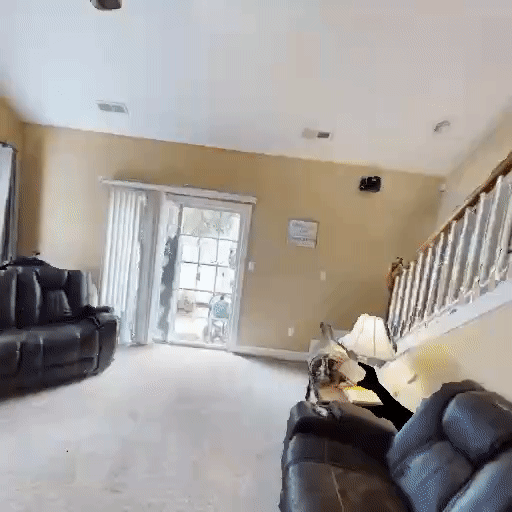
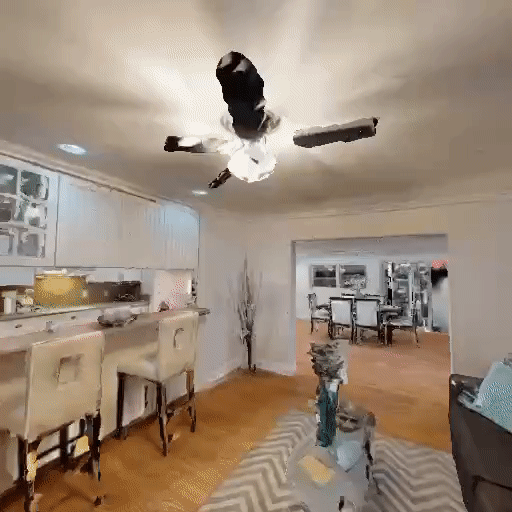
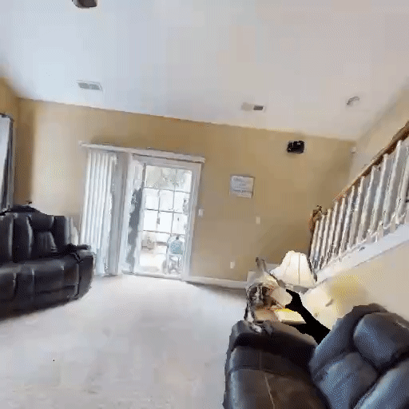
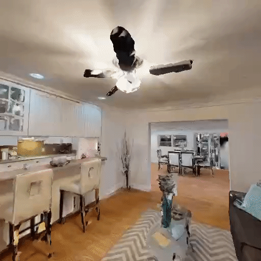

3D Concept Learning and Reasoning from Multi-View Images
Abstract
Humans are able to accurately reason in 3D by gathering multi-view observations of the surrounding world. Inspired by this insight, we introduce a new large-scale benchmark for 3D multi-view visual question answering (3DMV-VQA). This dataset is collected by an embodied agent actively moving and capturing RGB images in an environment using the Habitat simulator. In total, it consists of approximately 5k scenes, 600k images, paired with 50k questions. We evaluate various state-of-the-art models for visual reasoning on our benchmark and find that they all perform poorly. We suggest that a principled approach for 3D reasoning from multi-view images should be to infer a compact 3D representation of the world from the multi-view images, which is further grounded on open-vocabulary semantic concepts, and then to execute reasoning on these 3D representations. As the first step towards this approach, we propose a novel 3D concept learning and reasoning (3D-CLR) framework that seamlessly combines these components via neural fields, 2D pre-trained vision-language models, and neural reasoning operators. Experimental results suggest that our framework outperforms baseline models by a large margin, but the challenge remains largely unsolved. We further perform an in-depth analysis of the challenges and highlight potential future directions.
3DMV-VQA Dataset
Humans are able to accurately reason in 3D by gathering multi-view observations of the surrounding world. Inspired by this insight, we introduce a new large-scale benchmark for 3D multi-view visual question answering (3DMV-VQA). This dataset is collected by an embodied agent actively mov- ing and capturing RGB images in an environment using the Habitat simulator. Here we show an exemplar scene with multi-view images and question-answer pairs of our 3DMV-VQA dataset. 3DMV-VQA contains four question types: concept, counting, relation, comparison. Orange words denote semantic concepts; blue words denote the relations.


 



A robot agent explores the environment to collect multi-view images for 3D reasoning.
An exemplar scene with multi-view images and question-answer pairs of our 3DMV-VQA dataset. 3DMV-VQA contains four question types: concept, counting, relation, comparison. Orange words denote semantic concepts; blue words denote the relations.
3D-CLR Framework
An overview of our 3D-CLR framework. First, we learn a 3D compact scene representation from multi-view images using neural fields (I). Second, we use CLIP-LSeg model to get per-pixel 2D features (II). We utilize a 3D-2D alignment loss to assign features to the 3D compact representation (III). By calculating the dot-product attention between the 3D per-point features and CLIP language embeddings, we could get the concept grounding in 3D (IV). Finally, the reasoning process is performed via a set of neural reasoning operators, such as FILTER, GET INSTANCE and COUNT RELATION (V). Relation operators are learned via relation networks.
3D Concept Grounding on the Neural Fields
By calculating attention between CLIP language features and learned 3D features, we can ground concepts on the neural field.
Results on HM3D Dataset
Qualitative examples of our 3D-CLR. We can see that 3D-CLR can ground most of the concepts and answer most questions correctly. However, it still fails sometimes, mainly because it cannot separate close object instances and ground small objects.
Generalization to Replica Dataset
To further show that 3D-CLR trained on HM3D can be generalized to new reasoning datasets, we further collect a small visual question answering dataset on Replica with Habitat following the same data generation as HM3D. We can see that 3D-CLR can maintain the performance on Replica as it performs on HM3D, which shows 3D-CLR’s good generalization ability
Citation
@article{hong2023threedclr,
title={3D Concept Learning and Reasoning from Multi-View Images},
author={Hong, Yining and Lin, Chunru and Du, Yilun and Chen, Zhenfang and Tenenbaum, Joshua B and Gan, Chuang},
journal={Proceedings of the IEEE/CVF Conference on Computer Vision and Pattern Recognition},
year={2023}
}